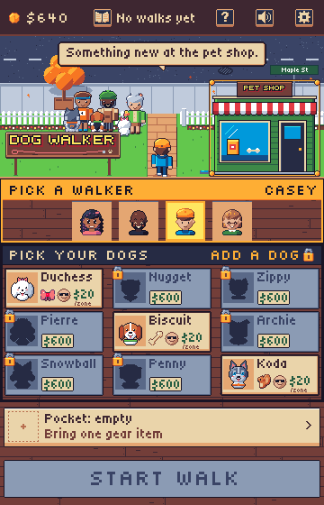
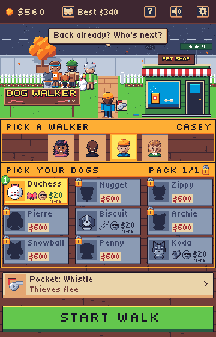
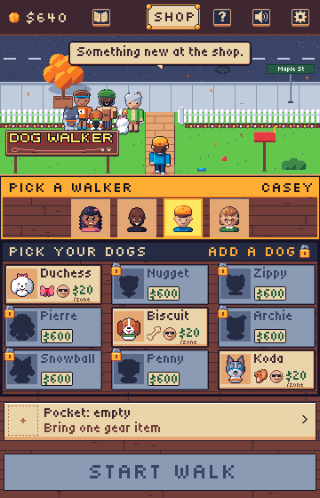
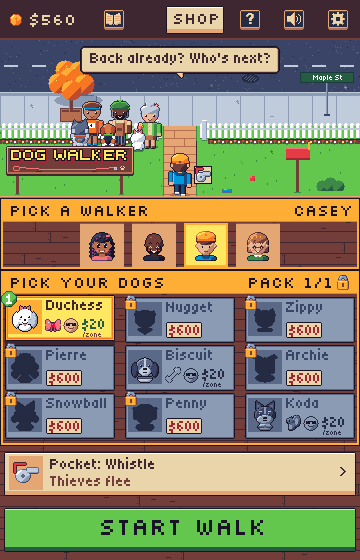

Start screen shop
Help, sound and settings sit together at the top right. The Gear section becomes a one-slot Pocket row: you own gear forever and bring one item per walk, as Hades' keepsakes. Gear, dogs and pack slots are bought in a pet shop. Walker and dogs stay the two steps; Start walk stays the one call to action. Sample banks are $640 (empty pocket, something affordable) and $560 (whistle in the pocket, nothing affordable).
A: Pet shop in the gate scene (recommended)
The shop is a building on the yard's right lot, replacing the slot sign, with a PET SHOP board in the yard sign's letters. When something new is affordable it takes the gold ui-afford outline and the walker says "Something new at the pet shop." The top bar keeps the bank, the Logbook and the best walk on the left. It reads as part of Maple Street and leaves the bar uncluttered. The building is a 120x104 hit area, but a first-time player may not know it can be tapped until the outline and the bubble point at it.


B: SHOP button in the top bar
Identical to A except that a SHOP button sits beside the controls (outlined in gold when something is affordable) and the yard keeps its lawn and mailbox. It is the most discoverable entry, but the bar loses the room for the best walk, which moves into the Logbook, and the shop reads as one more menu instead of a place on the street.


The shop page
Both variants open the same page under the top bar, so the bank stays in view. The Gear tab holds the pocket picker (all five items, owned ones pickable, the rest locked) and every gear item with its price or OWNED. The Dogs tab sells pack slots and dogs. Tapping the Pocket row opens Gear. Tapping a locked dog or the lock on the Dogs band opens Dogs at that item (Nugget here, framed by ui-select). Affordable rows take the gold outline, and a row you cannot buy yet is greyed with its reason.


Tile states
Locked is a flat navy silhouette in a grey tile, with the padlock at its corner and a price (or goal) plate. "Pack full" is the same grey tile, but the art stays readable (grey ramp, one step darker), with no padlock or plate. Both are unchosen, and the silhouette, padlock and plate separate them. Pack full is needed for dogs with two or three slots. With one slot, or in the Pocket, a tap swaps the choice, so the Pocket never shows it. A price is forest when the bank covers it, but the gold outline appears only in the shop and on the building. No dog unlocks by a goal today; the goal plate is for one that does.

Recommendation and what it needs
A. The shop is a place on Maple Street, the top bar holds only the bank, the Logbook and the controls, and the gold outline plus the walker's line make it discoverable when it matters. B is the fallback if playtests show players miss the building.
- New shipped art:
ui-pet-shop(120x104, tags normal and pressed, the board's letters baked in; A only) withscreen-homeredrawn without the mailbox behind it;icon-dog-slot(32x32, the doghouse with a plus). Locked silhouettes and the grey "pack full" art can be made in code, the waygreyTextureKeymakes grey cards. B needs no new art; anicon-shopwould only be needed for an icon-only button. - Code (both): top bar with help, sound and settings at x 240, 284 and 328; the Gear section replaced by the Pocket row (352x44, opens the shop's Gear tab); the slot sign removed and a lock on the Dogs band that opens the Dogs tab; locked dog tiles drawn as silhouette, padlock and plate; tap a locked item to open the shop at it; a shop scene with Gear and Dogs tabs, rows, buying and the pocket picker; the walker line "Something new at the pet shop." the first time an item is affordable.
- Code (A): the building's hit area, its press dip and its gold outline. Code (B): the SHOP button and its outline, and the best walk moved into the Logbook.